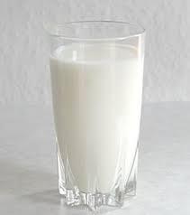
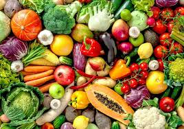
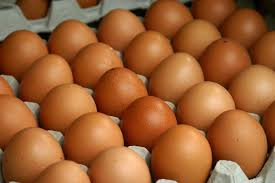
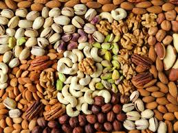
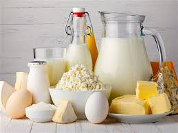

Types of Healthy Food
Vegtables and Fruits are one of the Most useful Fodds in the World Containg many Useful Substances?!!
- Milk one of the most vitail components in food used by the hunman body containg many useful substances mainly Calcium 
- All vegtables in the world are useful for the human body 
- Eggs also provide large number of proteins to the human body it is one of the most type of food containg proteins 
- All fruits in the world are also useful for the human body in many diffrent ways
- also NUTS are useful for the human body 
- All Cheese Products are essinetial for the human body 